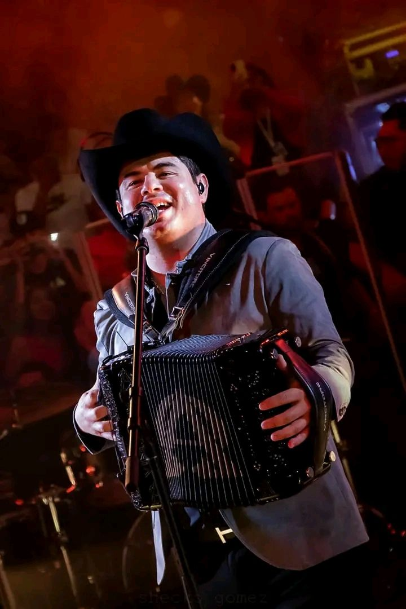

|  | ||||
| CANCION | LETRA |
| EL PACIENTE |
Cuando existe incertidumbre Y qué feo sabe la muerte Cuando se hace por costumbre Hasta mi cuerpo arribaron Visitas inesperadas Una se quedó conmigo Las otras iban de pasada Unas caras con asombro Y otras más desfiguradas El doctor viene en camino De seguro ya no tarda La esperanza seguía viva Pero la sangre me abandonaba Preguntaba por mi estado Pero nadie contestaba Con la mirada hacia el techo Y una movilidad nula La ansiedad y el desespero Con el miedo se acumula ¿Cómo pasaron los hechos? Preguntaba peritaje Señor, ahora le contesto Solo deje que la cuaje Y es que como se prepara Para dejar esta vida Si yo no compré boleto Y ya estaba de salida Quisiera ser Catarino Pa' curarme con saliva La esperanza se quedaba Pero el tiempo se me iba Con la calma por minuto Y el suero por segundero Como una fiera enjaulada A punto de perder el cuero El doctor ya está llegando Preparen bien al paciente Paciencia es lo que no tengo Espero y no haya inconvenientes Por si acaso no la libro Algo más quiero pedirles No me entierren, no me cremen Por si ya no quiero morirme Y es que en casos como este Siempre tiendo a arrepentirme Ya se me acabó el papel Es tiempo de despedirme |
| EL PRECIO DE LA SOLEDAD |
Qué cobarde eres, ya vi el miedo que me tienes Debí de suponerlo, pero no quería creerte Me duele lo que hiciste, lo acepto, sí, estoy muy triste Pero eso se pasa con traer líquido en la panza y eso haré Por tu culpa, hoy tomaré Nomás aclárame qué dirás cuando te pregunten Si estás muy a gusto, si ya me olvidaste Si ya no me extrañas, ¿qué contestarás? ¿Qué inventarás frente a tus amistades Para que no sepan lo que te sucede? ¿Qué argumentarás cuando el dolor te invada y tengas que pagar El precio de la soledad? Me duele lo que hiciste, lo acepto, sí, estoy muy triste Pero eso se pasa con traer líquido en la panza y eso haré Por tu culpa, hoy tomaré Nomás aclárame qué dirás cuando te pregunten Si estás muy a gusto, si ya me olvidaste Si ya no me extrañas, ¿qué contestarás? ¿Qué inventarás frente a tus amistades Para que no sepan lo que te sucede? ¿Qué argumentarás cuando el dolor te invada y tengas que pagar El precio de la soledad? |
| YO TODO LO DOY |
Yo todo lo doy O mejor dicho, lo daba, porque esto se va a acabar hoy Antes que no haya retorno, mejor de tu entorno me voy Decidido estoy Y es que me cansé De tu egoísmo, de pan con lo mismo, agotado quedé Aquel gramo de paciencia con tu indiferencia se fue Y yo con él Hasta el más iluso necesita un que otro guiño Un: Espero estén bien; un: ¿cómo se encuentra mi niño? Y va camino a un grave error por cometer A falta de cariño Y llegó el gran día en que la vida tocó mi espalda Y me dijo no persigas una falda Tarde o temprano verás que no es buena inversión Y hasta el más iluso necesita un que otro guiño Un: Ya te quiero ver; un: ¿cómo se encuentra mi niño? Y va camino a un grave error por cometer A falta de cariño Y llegó el gran día en que la vida tocó mi espalda Y me dijo no persigas una falda Y terminé comprobando que tuvo razón Que así fue que te arranqué De un solo golpe mi vida Hay demasiado que hacer Cuando no ves la salida No me dejaste opción Realmente no hubo opción Más que la despedida A buena hora paré Lo que vivimos fue insano Gracias a Dios, desperté Y metí el freno de mano Si crees que te perdí Debes saber que hoy, sin ti Es demasiado lo que gano |
| ANTECEDENTES DE CULPA |
Me pidió que la escuchara Que me calmara Y no era lo que parecía Conteste: Si para idiota se estudiara Me dijo: Para y bájale a tus groserías Le dije: Ya no eres nadie Pa' corregirme Mucho menos pa' ordenarme Y que si un día Quisiera aprender principios Seguramente buscaría en otra parte Y cegado por el coraje Le imprimí más ironía a mis palabras Si ese día me puse mi orgullo de traje No me importo que su mejilla se mojara Y aunque la charla fue breve Duro lo suficiente como para herirla En el momento me costó tanto entenderla Y ahora como le hago para conseguirla Borracho le dije vete Hoy bueno y sano Cómo diablos la regreso La extraño tanto Y no creí que iba a decirlo Pero me muero Porque me regale un beso Estoy pagando y es alto el precio Y sin entrar mucho en detalles Pero le dije Hasta de lo que iba a morirse Es que mi orgullo No tenía presupuestado Lo pronto y lo tanto Que iba a arrepentirse Y al día siguiente la cruda Me despertó con unas cuantas verdades Con un par de Antecedentes De Culpa Y una probada De mi propio chocolate Borracho le dije vete Hoy bueno y sano Cómo diablos la regreso La extraño tanto Y no creí que iba a decirlo Pero me muero Porque me regale un beso Estoy más solo que el mismo Sol Y tengo deudas, debo perdón |
| HOY TE PIERDO |
Hoy te pierdo Ya es oficial siendo las once con cuarenta Hoy te pierdo Y lo peor que fui el último en darme cuenta Tanto debate inconcluso Tanto beso de por medio Por cierto, bonito anillo Luce muy bien en tu dedo Hoy te pierdo Y para colmo traigo una cruda espantosa Y no tolero Ni me hago a la idea que pronto serás su esposa Tanto discutir el tema Y hoy me quema sin remedio Qué pena que yo en tu vida Solo fui un simple intermedio Y te pierdo con todos los honores, con todo el estilo Y te pierdo sin ganas de perderte y es que no lo asimilo Te pierdo como se pierde la oscuridad de la aurora Pierdo algo que nunca tuve, maldita sea la hora Y te pierdo con todos los honores, con todo el estilo Y te pierdo sin ganas de perderte y es que no lo asimilo Te pierdo como se pierde la oscuridad de la aurora Pierdo algo que nunca tuve, maldita sea la hora Y a lo feliz que ayer estuve, préndele una veladora |